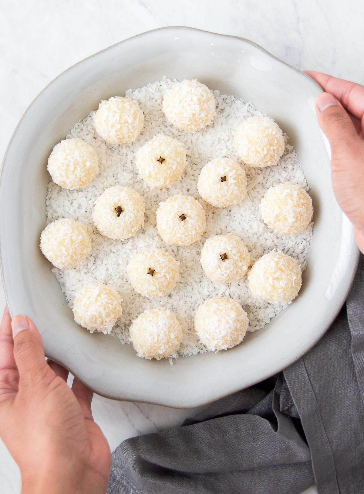

Home
Beijinho de Coco

Description
Beijinhos are a delicious and easy to make Brazilian dessert. They are Brazilian coconut balls - essentially cocunut fudge rolled into bite-sized balls. The direct translation of the name is coconut kiss. They are great for parties!
Ingredients
- 1 can of sweetened condensed milk
- Unsweetened, shredded coconut or cocunut flakes
- Unsalted butter
- Heavy cream
Steps
- Combine condensed milk, butter, and heavy cream in a medium saucepan over medium heat and heat it up until the butter melts.
- After the butter has melted, add half of the shredded coconut to the pan and stir until combined. Keep cooking over medium heat, continuously stirring. Around 10 minutes.
- Pour the hot cocunut mixture into a plate, cover with platic wrap to contact, and let it it cool completely. Should take about 2 hours.
- Pinch off some of the dough and roll into a small ball; place on a plate. I recommend lightly buttering your hands before this step. Repeat with remaining mixture, then roll each beijinho in shredded coconut.
- Store the coconut fudge balls in a cool place or in the refrigerator until serving time.